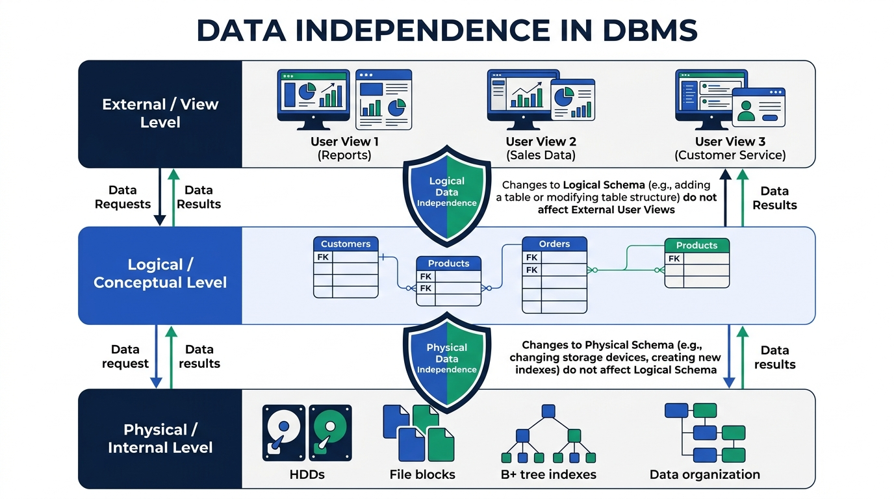

Data Independence in DBMS
Master how DBMS insulates application programs and user views from lower-level structural and physical storage changes. Detailed breakdown of Physical vs Logical Data Independence.
💡 1. What is Data Independence?
Data Independence is the ability to modify a schema definition in one level of the database architecture without requiring changes to the schema definition in the next higher level or breaking application programs.
🖼️ Visual Diagram: Data Independence Shields
The diagram below illustrates how DBMS places "independence shields" between the Physical, Logical, and External View levels:

⚙️ 1.3.1 Physical Data Independence
Physical Data Independence is the capacity to modify the Physical Schema (storage structures, indexing, hard disk layouts) without causing changes to the Logical Schema (table definitions, attributes, SQL queries).
Examples of Physical Modifications:
- Upgrading physical storage devices (e.g. migrating from magnetic HDDs to NVMe SSDs).
- Creating a new B+ Tree Index or Hash Index on a table column to speed up search performance.
- Changing file organization (e.g. switching from Sequential file organization to Clustered file organization).
- Changing disk block sizes or data compression algorithms.
🧩 1.3.2 Logical Data Independence
Logical Data Independence is the capacity to modify the Logical Schema (table definitions, columns, entities) without requiring changes to the External / View Schemas or existing application programs.
Examples of Logical Modifications:
- Adding a new column (e.g.
Aadhaar_NumberorEmail) to an existingSTUDENTtable. - Deleting an unused attribute or creating a new table.
- Decomposing (splitting) a table into two smaller tables or merging two tables.
VIEWS to map existing user queries to modified tables.
⚖️ Comparison Table: Physical vs Logical Data Independence
| Comparison Parameter | ⚙️ Physical Data Independence | 🧩 Logical Data Independence |
|---|---|---|
| Definition | Modify physical storage without affecting logical tables. | Modify logical tables without affecting user views/apps. |
| Level of Change | Physical Level (Internal Schema) | Logical Level (Conceptual Schema) |
| Schema Insulation | Physical Schema ↔ Logical Schema | Logical Schema ↔ View Schema |
| Ease of Achievement | Easier to achieve | Harder to achieve |
| Typical Trigger | Performance tuning, disk upgrades, indexing. | Business requirement changes, adding columns/tables. |
| Mechanism Used | Conceptual / Internal Mapping | External / Conceptual Mapping (SQL Views) |
🔗 How DBMS Implements Data Independence: Mapping
The DBMS achieves data independence using two layers of Mapping:
- 1. Conceptual / Internal Mapping: Maps logical table fields to physical memory addresses on disk. If physical storage changes, only this mapping table is updated by DBMS!
- 2. External / Conceptual Mapping: Maps user views to logical tables. If logical tables change, the DBA updates the view definition mapping, so user apps remain intact!
🎯 IBPS SO IT Officer — Exam Focus & Past PYQ Cues
Q1: Which type of Data Independence is harder to achieve in DBMS?
👉 Answer: Logical Data Independence (because application queries are directly bound to logical structures).
Q2: Creating an index on a database table to speed up retrieval is an example of?
👉 Answer: Physical Data Independence.
Q3: Adding a new attribute to a relation without altering existing user views demonstrates?
👉 Answer: Logical Data Independence.